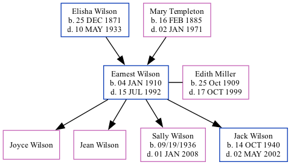

Earnest Wilson 1910 - 1992
[ Home ] | [ Surnames Index ] | [ Family History ]The 4th of 6 children of Elisha Wilson and Mary Templeton, was born in Joplin, Missouri on Jan 4, 19101,2,3,4,5 and married Edith Miller (with whom he had 4 children: Joyce, Jean, Sally Ann and Jack Duane) in Genoa, Col on May 27, 1931.
During his life, he was living in Shoal Creek, Newton, Missouri in 19101; in Winner, Tripp, South Dakota in 19202; in Beaver, Washington, Colorado in 19303; in South Berthoud, Larimer, Colorado in 19354; and in South Berthoud, Larimer, Colorado, USA on Apr 1, 19404.
He died on Jul 15, 1992 in Berthoud, Colorado5.
Parents
- Elisha Filewood was born on Dec 25, 1871
- Mary Etta was born on Feb 16, 1885
Children
- Joyce
- Jean
- Sally Ann was born on 09/19/1936
- Jack Duane was born on Oct 14, 1940
Citations
- 1910 United States Federal Census Ancestry.com Operations Inc (Age in 1910: 0; Age in 1910: 4/12; Marital Status: Single; Relation to Head of House: Son)
- 1920 United States Federal Census Ancestry.com Operations Inc (Age: 4; Marital Status: Single; Relation to Head of House: Son)
- 1930 United States Federal Census Ancestry.com Operations Inc (Age: 14; Marital Status: Single; Relation to Head of House: Son, Age: 20; Marital Status: Single; Relation to Head of House: Son)
- 1940 United States Federal Census Ancestry.com Operations, Inc. (Age: 30; Marital Status: Married; Relation to Head of House: Head)
- Social Security Death Index Ancestry.com Operations Inc
Family Tree
Data (GEDCOM) maintained by Jay Weston Hannah, Omaha, Nebraska, USA.
Website generated by ged2site. Last updated on Jun 18, 2024.